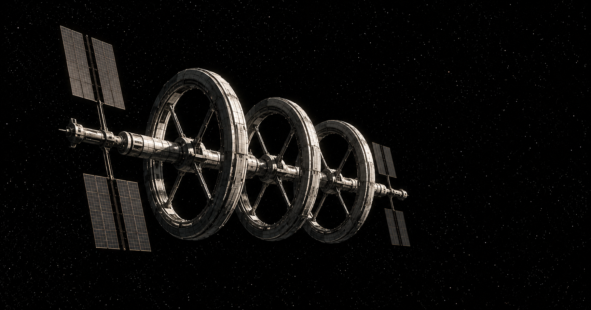

Aegis Station
Aegis Station is a rotating habitat for lunar orbit: three rings on a hub that does not turn, each ring turning at 1.50 rpm for 1 g at its floor and shielded by three metres of water mined on the Moon. This page is the station in brief and an index of its systems, with how far along each one is.

| Quantity | Value |
|---|---|
| Rings | 3, spaced 200 m along the hub |
| Ring centreline radius | 350 m; outer hull at 400 m |
| Tube | 100 m across |
| Floor | 397 m from the rotation axis |
| Spin rate and gravity | 1.50 rpm, 1.0 g at the floor |
| Shield | 3 m of lunar water in the tube wall, 47 to 50 m from the tube's centre |
| Shield mass | 2.01 Mt per ring, 6.0 Mt in all |
| Dry structure | about 220,000 t per ring |
| Usable volume | over 1,000,000 m3 per ring |
| Hub | 650 m, not rotating, with docking at both ends |
From the master dossier, v3.1. The shield's mass follows from its geometry: 2π2 × 350 × (502 − 472) is 2.01 million cubic metres a ring.
Each system has a line here, and a page when there is work to show. The status says what exists, in the order the work is done: a concept, then a model, then a simulator and flight software run against it. No part of the station has been built or flown.
| System | What it covers | Status |
|---|---|---|
| Rotational dynamics | The fill, the spin-up and normal operation: balance by pumped water, the resonances crossed on the way up, holding a ring's axis, and what keeps rings apart and the hub whole | Modelled and simulated, with an operator console and recorded runs. No flight software yet. |
| Hub/ring boundary | How crew, cargo, power, data and heat cross between the hub and a turning ring with no continuous rotary seal | Requirements review, flight software, simulator and console; the fault library has been run. |
| Hull inspection | A resident free-flyer that inspects the outside of the station without a spacewalk, and the crew-assisted inspection capability beside it | Flight software and simulator for the drone; a requirements reference for the crew capability. |
| Shield and fluid systems | Segmented water containment, fill and top-off, monitoring. A demonstration of one shield segment is defined | Concept, with a demonstration defined. The shield's internal layout is open. |
| Structures | The rings, the hub and the load paths between them under spin | Concept-level sizing only. |
| Artificial gravity | The radius and spin rate people can live with. An in-orbit evaluation is defined | Requirements reference. |
| Life support (ECLSS) | Air, water recovery, waste, contamination control and fire | Not started. |
| Power | Generation, storage and distribution. The crossing of power into a turning ring is on the hub/ring boundary page | Not started. |
| Thermal | Heat rejection on each side of the rotating boundary | Not started. |
| Operations and safety | Compartments, isolation of a ring, emergency routes | Not started. |
How the rings are assembled dry in orbit, then filled and brought up to speed. Construction & deployment logistics.
Six million tonnes of shield water, mined at the lunar south pole and flown up 45 t at a time. Lunar water logistics and the tanker fleet.
Early explorations of the spaces a permanent community needs. Life aboard.
How the station sits among the vehicles, surface systems and logistics around it. Program architecture and technical domains.
The master dossier is the station's reference document: its specifications, the shield, the fill, the hub, interior zoning, and the engineering topics still open. Master dossier, v3.1 (PDF).